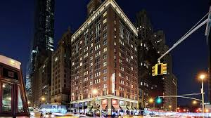
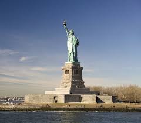

Viatge a Nova York
Primer dia
El primer dia vaig arribar a l'hora de sopar ja que l'avió va tenir retard, així que quan vaig arribar vaig anar a l'hotel a deixar la maleta i les meves coses, i després vaig anar a sopar, la veritat que nova york és la ciutat amb diferència més cara que he estat encara que sí que hi ha molta varietat de coses a fer i llocs per visitar.

Després de sopar vaig anar al times square ja que una altra cosa bona que té nova york és que pots fer qualsevol cosa a qualsevol hora, tot estava ple de pantalles i de llums la veritat que em va decepcionar una mica perquè hi havia força brutícia i no és que hi hagi molta seguretat.
Segon dia
El segon dia vaig anar a la major atracció que té Nova York i és l'estàtua de la llibertat, hi ha la possibilitat de poder veure-la en helicòpter però és força car, però de totes la pots visitar amb un guia i surt força assequible, encara que hi ha molta gent.

Després vaig anar al central park i la veritat que va ser el lloc que més em va agradar de Nova York, és gegant i hi ha força activitats que pots fer com anar amb bici també hi ha molta vegetació i esquirols que els pots donar de menjar.

Per últim a la tarda-nit vaig anar a veure les botigues que té nova york que la veritat és que hi ha moltíssimes i de botigues que no trobaràs a gairebé cap lloc, això si és massa cara però és comprensible per la zona on es troba.
Tercer dia

A l'últim dia vaig anar a veure una obra de teatre al teatre Broadway encara que cal reservar-les amb temps ja que hi va molta gent, em va agradar força i és un lloc molt mític de nova york a més que és molt bonic per dins.

Després vaig anar a l'empire states que em va semblar espectacular ja que veus tota nova york des d'allà, encara que passa una cosa semblant a tailàndia ja que hi ha molta contaminació i no s'aconsegueix veure del tot bé la ciutat, però la veritat que val la pena.

Per últim a la nit vaig ser de festa amb uns amics i la veritat que em decebo força la nit en nova york i tot és massa cara, sincerament no ho recomanaria ja que no et perds res ia sobre és tot força privat i la música no és que fos molt bona.
Seguretat
Sincerament Nova York m'ha semblat una ciutat bastant insegura hi ha molta gent amb necesitats y no esta molt neta, es un viatge que no recomanaria